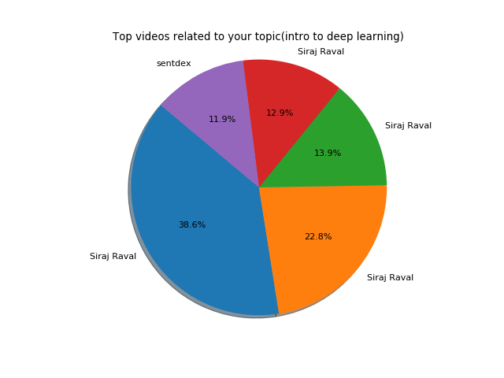

Today youtube is a big source of data especially when you want to do some type of text analysis. So, what I can do with this huge data sets. After thinking many hours, I got one idea/problem. Problem is if I want to learn any topic, lots of videos are available on that topic. Some are good videos and some are bad(bad in the sense that people do not like that video too much). For example if I want to watch video based on "intro to deep learning" topic tons of videos are availble but I want to watch that video on which people have written most postive comments. So, the question is how can I do this? Unfortunately, youtube community provides the way to download the comment section of the video. To download a large set of YouTube comments, I used a Python script that uses the official YouTube API,which (fortunately) offers generous API limits, allowing us to gather hundreds of thousands of individual comments. Then I have used the vader lexixcon library for sentiment analysis written in python. Following are the steps that I did in order to find best video on given topic.
- At first step I got 500 videos by providing the topic(intro to deep learning) to youtube API
- Of the 500, I just keep 100 because too many videos were present in my dataset which are not related to my topic
- Next I dowloaded all the comments by providing ids of the 100 videos to youtube API
- Furthermore I have find the positivity of single comment by using vader_lexicon library
- Then I found the total number of positve, neagetive and neutral comments of a single video
- Fianlly I gave the final tag(positive, negative, neutral) to all videos
Results
Finally on the basis of number of positive comments in a single video I sort all the videos and fetch top five videos on which people have written most positive comments. Of the 5 videos, 4 are refer to Siraj raval one of the famous American Data Scientist, AI Educator, Youtube Personality, and author.So, user just go to watch first top video out of many videos. Below is the pie chart showing the final result.
Visit this link so that you can look at the source code